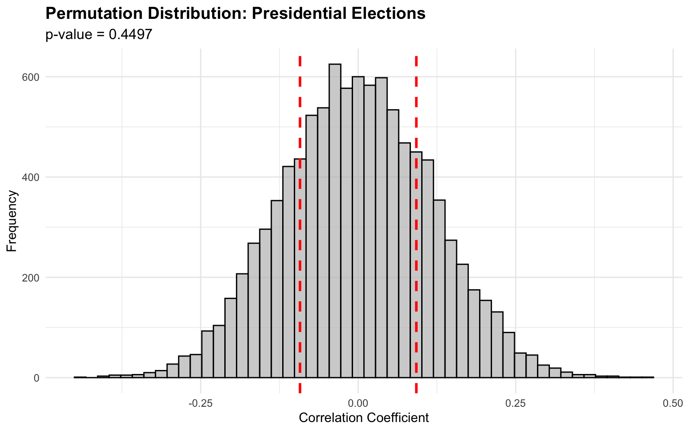
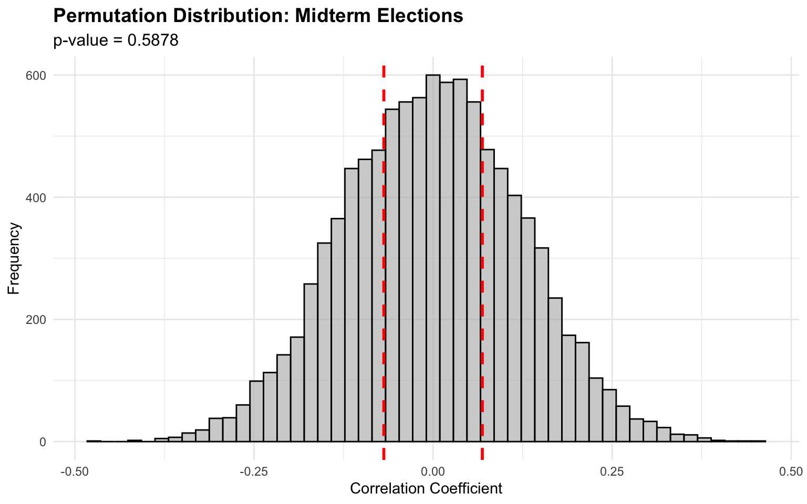

Code
library(tidyverse)
library(janitor)
library(ggplot2)
library(knitr)
library(kableExtra)library(tidyverse)
library(janitor)
library(ggplot2)
library(knitr)
library(kableExtra)# Load weather data
election_day_weather_df <- read_csv("../data/processed-data/election_day_weather_full_cleaned.csv") %>%
clean_names() %>%
arrange(state, year)
# Load voter turnout data
voter_turnout_df <- read_csv("../data/processed-data/voter_turnout_selected_states.csv") %>%
clean_names() %>%
arrange(state, year) %>%
mutate(
# Turnout level: low (below mean) vs high (above mean)
turnout_level = ifelse(normalized_vep_turnout < 0, "Low", "High")
)
# Merge datasets
weather_turnout_full <- election_day_weather_df %>%
inner_join(voter_turnout_df, by = c("state", "year"))
cat(sprintf("Total observations: %d\n", nrow(weather_turnout_full)))Total observations: 138cat(sprintf("Presidential elections: %d\n", sum(weather_turnout_full$election_type.x == "Presidential")))Presidential elections: 72cat(sprintf("Midterm elections: %d\n", sum(weather_turnout_full$election_type.x == "Midterm")))Midterm elections: 66# Filter for Presidential elections
weather_turnout_pres <- weather_turnout_full %>%
filter(election_type.x == "Presidential")Research Question: Is there a significant association between weather conditions (dry vs. wet days) and voter turnout classification (high vs. low relative to expected turnout)?
Hypotheses:
Method: Chi-square test of independence using a 2×2 contingency table
# Create contingency table
contingency_table_pres <- table(weather_turnout_pres$day_type,
weather_turnout_pres$turnout_level)
# Display table
addmargins(contingency_table_pres)
High Low Sum
Dry 27 21 48
Wet 10 14 24
Sum 37 35 72# Perform chi-square test
chi_pres <- chisq.test(contingency_table_pres)
chi_pres
Pearson's Chi-squared test with Yates' continuity correction
data: contingency_table_pres
X-squared = 0.84093, df = 1, p-value = 0.3591# Check expected frequencies
# chi_pres$expected✗ FAIL TO REJECT H₀ (p = 0.359132 ≥ 0.05)
There is NO statistically significant association between weather conditions
and voter turnout classification in Presidential elections.There is NO statistically significant association between weather conditions and voter turnout classification in Presidential elections.
Research Question: Does temperature exhibit a statistically significant linear relationship with voter turnout, beyond what would be expected by random chance?
Hypotheses:
Method: Two-tailed permutation test for Pearson correlation coefficient
desc_stats_pres <- tibble(
Variable = c("Temperature (°F)", "VEP Turnout Rate"),
Mean = c(mean(weather_turnout_pres$tavg, na.rm = TRUE),
mean(weather_turnout_pres$vep_turnout_rate, na.rm = TRUE)),
SD = c(sd(weather_turnout_pres$tavg, na.rm = TRUE),
sd(weather_turnout_pres$vep_turnout_rate, na.rm = TRUE)),
Min = c(min(weather_turnout_pres$tavg, na.rm = TRUE),
min(weather_turnout_pres$vep_turnout_rate, na.rm = TRUE)),
Max = c(max(weather_turnout_pres$tavg, na.rm = TRUE),
max(weather_turnout_pres$vep_turnout_rate, na.rm = TRUE))
)
desc_stats_pres %>%
kable(caption = "Descriptive Statistics: Presidential Elections",
digits = 4,
col.names = c("Variable", "Mean", "SD", "Min", "Max")) %>%
kable_styling(bootstrap_options = c("striped", "hover", "condensed"),
full_width = FALSE)| Variable | Mean | SD | Min | Max |
|---|---|---|---|---|
| Temperature (°F) | 52.3542 | 11.6285 | 30.0000 | 79.0000 |
| VEP Turnout Rate | 0.6070 | 0.0555 | 0.4901 | 0.7464 |
set.seed(5100)
n_permutations <- 10000
# Calculate observed correlation
observed_cor_pres <- cor(weather_turnout_pres$tavg,
weather_turnout_pres$vep_turnout_rate,
use = "complete.obs")
# Run permutations
permuted_cors_pres <- numeric(n_permutations)
for (i in 1:n_permutations) {
shuffled_turnout <- sample(weather_turnout_pres$vep_turnout_rate)
permuted_cors_pres[i] <- cor(weather_turnout_pres$tavg,
shuffled_turnout,
use = "complete.obs")
}
# Calculate p-value (two-tailed)
p_value_pres <- mean(abs(permuted_cors_pres) >= abs(observed_cor_pres))
# Calculate R²
r_squared_pres <- observed_cor_pres^2perm_results_pres <- tibble(
Statistic = c("Observed correlation (r)",
"Permutation p-value",
"R² (variance explained)",
"Number of permutations",
"Significance"),
Value = c(
sprintf("%.6f", observed_cor_pres),
sprintf("%.6f", p_value_pres),
sprintf("%.4f (%.2f%%)", r_squared_pres, r_squared_pres * 100),
sprintf("%d", n_permutations),
ifelse(p_value_pres < 0.05, "Yes (p < 0.05)", "No (p ≥ 0.05)")
)
)
perm_results_pres %>%
kable(caption = "Permutation Test Results: Presidential Elections",
align = c("l", "r")) %>%
kable_styling(bootstrap_options = c("hover", "condensed"),
full_width = FALSE) %>%
row_spec(5, bold = TRUE)| Statistic | Value |
|---|---|
| Observed correlation (r) | 0.092328 |
| Permutation p-value | 0.449700 |
| R² (variance explained) | 0.0085 (0.85%) |
| Number of permutations | 10000 |
| Significance | No (p ≥ 0.05) |
tibble(correlation = permuted_cors_pres) %>%
ggplot(aes(x = correlation)) +
geom_histogram(bins = 50, fill = "grey", color = "black", alpha = 0.7) +
geom_vline(xintercept = observed_cor_pres, color = "red",
linetype = "dashed", size = 1.0) +
geom_vline(xintercept = -observed_cor_pres, color = "red",
linetype = "dashed", size = 1.0) +
# annotate("text", x = observed_cor_pres, y = Inf,
# label = sprintf("Observed r = %.4f", observed_cor_pres),
# hjust = -0.1, vjust = 2, color = "red", fontface = "bold") +
labs(title = "Permutation Distribution: Presidential Elections",
subtitle = sprintf("p-value = %.4f", p_value_pres),
x = "Correlation Coefficient",
y = "Frequency") +
theme_minimal() +
theme(plot.title = element_text(face = "bold", size = 14),
plot.subtitle = element_text(size = 12))
**Statistical Conclusion:**✗ FAIL TO REJECT H₀ (p = 0.449700 ≥ 0.05)
**Effect Size:** r = 0.092328 indicates a negligible correlation.Temperature explains 0.85% of the variance in turnout.There is NO statistically significant correlation between temperature and voter turnout in Presidential elections. Negligible Correlation
# Filter for Midterm elections
weather_turnout <- weather_turnout_full %>%
filter(election_type.x == "Midterm")Research Question: Is there a significant association between weather conditions (dry vs. wet days) and voter turnout classification (high vs. low relative to expected turnout)?
Hypotheses:
Method: Chi-square test of independence using a 2×2 contingency table
# Create contingency table
contingency_table <- table(weather_turnout$day_type,
weather_turnout$turnout_level)
# Display table
addmargins(contingency_table)
High Low Sum
Dry 22 20 42
Wet 12 12 24
Sum 34 32 66# Perform chi-square test
chi <- chisq.test(contingency_table)
chi
Pearson's Chi-squared test with Yates' continuity correction
data: contingency_table
X-squared = 0, df = 1, p-value = 1# Check expected frequencies
chi$expected
High Low
Dry 21.63636 20.36364
Wet 12.36364 11.63636✓ Minimum expected frequency
# Calculate proportions (%)
prop.table(contingency_table, margin = 1) * 100
High Low
Dry 52.38095 47.61905
Wet 50.00000 50.00000
**Statistical Conclusion:**✗ FAIL TO REJECT H₀ (p = 1.000000 ≥ 0.05)
There is NO statistically significant association between weather conditions
and voter turnout classification in Midterm elections.There IS a statistically significant association between weather conditions and voter turnout classification in Midterm elections
Research Question: Does temperature exhibit a statistically significant linear relationship with voter turnout, beyond what would be expected by random chance?
Hypotheses:
Method: Two-tailed permutation test for Pearson correlation coefficient
desc_stats <- tibble(
Variable = c("Temperature (°F)", "VEP Turnout Rate"),
Mean = c(mean(weather_turnout$tavg, na.rm = TRUE),
mean(weather_turnout$vep_turnout_rate, na.rm = TRUE)),
SD = c(sd(weather_turnout$tavg, na.rm = TRUE),
sd(weather_turnout$vep_turnout_rate, na.rm = TRUE)),
Min = c(min(weather_turnout$tavg, na.rm = TRUE),
min(weather_turnout$vep_turnout_rate, na.rm = TRUE)),
Max = c(max(weather_turnout$tavg, na.rm = TRUE),
max(weather_turnout$vep_turnout_rate, na.rm = TRUE))
)
desc_stats %>%
kable(caption = "Descriptive Statistics: Midterm Elections",
digits = 4,
col.names = c("Variable", "Mean", "SD", "Min", "Max")) %>%
kable_styling(bootstrap_options = c("striped", "hover", "condensed"),
full_width = FALSE)| Variable | Mean | SD | Min | Max |
|---|---|---|---|---|
| Temperature (°F) | 51.6515 | 11.7588 | 31.0000 | 76.0000 |
| VEP Turnout Rate | 0.4326 | 0.0617 | 0.2913 | 0.5913 |
set.seed(5100)
n_permutations <- 10000
# Calculate observed correlation
observed_cor <- cor(weather_turnout$tavg,
weather_turnout$vep_turnout_rate,
use = "complete.obs")
# Run permutations
permuted_cors <- numeric(n_permutations)
for (i in 1:n_permutations) {
shuffled_turnout <- sample(weather_turnout$vep_turnout_rate)
permuted_cors[i] <- cor(weather_turnout$tavg,
shuffled_turnout,
use = "complete.obs")
}
# Calculate p-value (two-tailed)
p_value <- mean(abs(permuted_cors) >= abs(observed_cor))
# Calculate R²
r_squared <- observed_cor^2perm_results <- tibble(
Statistic = c("Observed correlation (r)",
"Permutation p-value",
"R² (variance explained)",
"Number of permutations",
"Significance"),
Value = c(
sprintf("%.6f", observed_cor),
sprintf("%.6f", p_value),
sprintf("%.4f (%.2f%%)", r_squared, r_squared * 100),
sprintf("%d", n_permutations),
ifelse(p_value < 0.05, "Yes (p < 0.05)", "No (p ≥ 0.05)")
)
)
perm_results %>%
kable(caption = "Permutation Test Results: Midterm Elections",
align = c("l", "r")) %>%
kable_styling(bootstrap_options = c("hover", "condensed"),
full_width = FALSE) %>%
row_spec(5, bold = TRUE)| Statistic | Value |
|---|---|
| Observed correlation (r) | 0.068752 |
| Permutation p-value | 0.587800 |
| R² (variance explained) | 0.0047 (0.47%) |
| Number of permutations | 10000 |
| Significance | No (p ≥ 0.05) |
tibble(correlation = permuted_cors) %>%
ggplot(aes(x = correlation)) +
geom_histogram(bins = 50, fill = "grey", color = "black", alpha = 0.7) +
geom_vline(xintercept = observed_cor, color = "red",
linetype = "dashed", size = 1.0) +
geom_vline(xintercept = -observed_cor, color = "red",
linetype = "dashed", size = 1.0) +
labs(title = "Permutation Distribution: Midterm Elections",
subtitle = sprintf("p-value = %.4f", p_value),
x = "Correlation Coefficient",
y = "Frequency") +
theme_minimal() +
theme(plot.title = element_text(face = "bold", size = 14),
plot.subtitle = element_text(size = 12))
**Statistical Conclusion:**✗ FAIL TO REJECT H₀ (p = 0.587800 ≥ 0.05)
There is NO statistically significant correlation between temperature
and voter turnout in Midterm elections.
**Effect Size:** r = 0.068752 indicates a negligible correlation.Temperature explains 0.47% of the variance in turnout.There IS a statistically significant correlation between temperature and voter turnout in Midterm elections.
# Create comparison table for Chi-Square tests
chi_comparison <- tibble(
`Election Type` = c("Presidential", "Midterm"),
`χ² Statistic` = c(chi_pres$statistic, chi$statistic),
`p-value` = c(chi_pres$p.value, chi$p.value),
`Significant?` = c(
ifelse(chi_pres$p.value < 0.05, "Yes", "No"),
ifelse(chi$p.value < 0.05, "Yes", "No")
)
)
chi_comparison %>%
kable(caption = "Chi-Square Test Comparison: Presidential vs. Midterm Elections",
digits = 6,
align = c("l", "r", "r", "c")) %>%
kable_styling(bootstrap_options = c("striped", "hover", "condensed"),
full_width = FALSE)| Election Type | χ² Statistic | p-value | Significant? |
|---|---|---|---|
| Presidential | 0.840927 | 0.359132 | No |
| Midterm | 0.000000 | 1.000000 | No |
# Create comparison table for Permutation tests
perm_comparison <- tibble(
`Election Type` = c("Presidential", "Midterm"),
`Correlation (r)` = c(observed_cor_pres, observed_cor),
`p-value` = c(p_value_pres, p_value),
`R²` = c(r_squared_pres, r_squared),
`Significant?` = c(
ifelse(p_value_pres < 0.05, "Yes", "No"),
ifelse(p_value < 0.05, "Yes", "No")
)
)
perm_comparison %>%
kable(caption = "Permutation Test Comparison: Presidential vs. Midterm Elections",
digits = 6,
align = c("l", "r", "r", "r", "c")) %>%
kable_styling(bootstrap_options = c("striped", "hover", "condensed"),
full_width = FALSE)| Election Type | Correlation (r) | p-value | R² | Significant? |
|---|---|---|---|---|
| Presidential | 0.092328 | 0.4497 | 0.008524 | No |
| Midterm | 0.068752 | 0.5878 | 0.004727 | No |
**Summary of Hypothesis Tests:**1. Chi-Square Test (Weather × Turnout Classification): - Presidential: χ² = 0.8409, p = 0.359132 → Not Significant - Midterm: χ² = 0.0000, p = 1.000000 → Not Significant2. Permutation Test (Temperature × Turnout Correlation): - Presidential: r = 0.092328, p = 0.449700 → Not Significant - Midterm: r = 0.068752, p = 0.587800 → Not Significant**Overall Conclusion:**Neither weather conditions nor temperature show statistically significantassociations with voter turnout in either Presidential or Midterm elections.